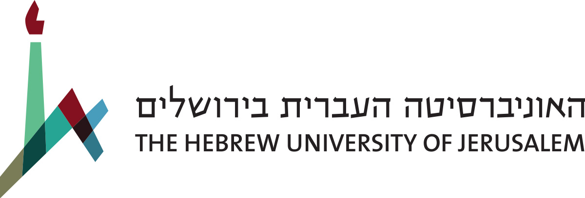
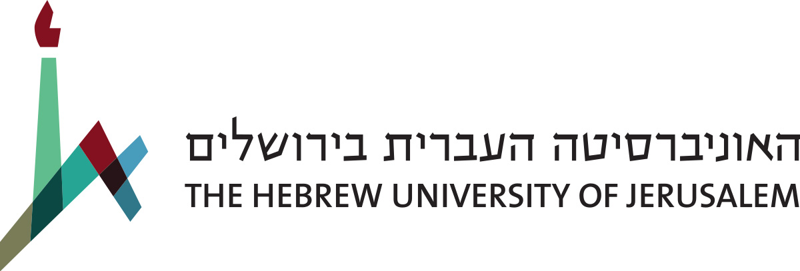

Sunday, February 19
Center for Artificial Intelligence & Data Science (Tel Aviv University)
09:00-10:15: Opening Session & Keynote
09:00-09:15: Gathering
09:15-09:30: Opening Remarks:
Yoram Cohen (Tel Aviv University), Head of the School of Jewish Studies and Archaeology
Jonathan Ben-Dov (Tel Aviv University), Humanities community, TAD Center
09:30-10:15: Keynote:
A sketch of digital Egyptology: Exploring Texts, Language, and Scripts with 21st c. Technology
Eliese-Sophia Lincke (FU Berlin)
10:15-10:30: Coffee Break
10:30-11:45: Session 1: Optical Character Recognition
Chair: Gabriel Stanovsky (Hebrew University of Jerusalem)
Preparing Multi-layered Visualizations of Old Babylonian Cuneiform Tablets for an AI OCR Training towards Automated Sign Recognition
Hendrik Hameeuw (KU Leuven), Katrien De Graef, Gustav Ryberg Smidt, Anne Goddeeris (Ghent University), Timo Homburg (Mainz University of Applied Sciences), Kris Demuynck (Ghent University)
Cuneiform Sign Detection & Recognition
Yunus Cobanoglu, Enrique Jiménez (Ludwig Maximilian University of Munich), Luis Sáenz (Ariel University and Heidelberg University)
“Deeplomatics”: Deep learning for automatic analysis of cuneiform texts
Morris Alper (Tel Aviv University), Shai Gordin (Ariel University)
15 min. Discussion
11:45-12:00: Coffee Break
12:00-13:00: Session 2: Data Visualization
Chair: Hendrik Hameeuw (KU Leuven)
Visualizing a Cuneiform Collection - Remote talk
Jon Taylor (British Museum)
Visualisation Of Metadata In 2D/3D Digital Cuneiform Artifacts
Michael Wamposzyc (Edinburgh Napier University)
10 min. Discussion
13:00-14:30: Lunch Break
14:30-15:45: Session 3: Critical DH and Computational Methodologies
Chair: Hubert Mara (University of Halle-Wittenberg)
Creating a Blockchain for Cultural Objects: Introducing AGUR - Remote talk
Mark Altaweel (University College London)
Combined Analysis of Ancient Near Eastern Texts and Images: Gains, Challenges and Risky Paths of a Computational Approach to Hittite Religious Atmosphere - Remote talk
Alessandra Gilibert (Università Ca' Foscari, Venice), Michele Cammarosano (Università L'Orientale, Naples), Renzo Orsini (Università Ca' Foscari, Venice)
MTAAC: Machine Translation and Automated Analysis of Cuneiform Languages - Remote talk
Heather D. Baker (University of Toronto)
15 min. Discussion
15:45-16:00: Coffee Break
16:00-16:45 Session 4: Q&A Session
Moderator: Shai Gordin (Ariel University)
Venue: Circulation Hall of the Sourasky Central Library, Tel Aviv University.
Q&A Session on Ancient Language Processing
Niek Veldhuis, Eliese-Sophia Lincke, Hubert Mara, Hendrik Hameeuw
16:45-17:30 Session 5: Roundtables and Posters
Moderator: Stav Klein (Tel Aviv University and TAD Center)
Poster presentations and roundtable discussions on critical topics in digital ANE studies
Monday, February 20
Hosted by the Digital Pasts Lab (Ariel University)
08:30-09:30: Bus from Tel Aviv Hotel to Ariel University
09:30-10:30 Opening Session & Keynote
09:30–09:45: Opening Remarks
Itzick Shai (Ariel University), Vice president & Dean of R&D
09:45-10:30: Keynote: Niek Veldhuis (UC Berkeley)
10:30-10:45 Coffee Break
10:45-12:00 Session 6: Computational Stylistics
Chair: Luis Sáenz (Heidelberg University/Ariel University)
Independent Unsupervised Examination of the Distinction Between Texts of Priestly and Non-priestly Origins in the Books of Genesis and Exodus
Gideon Yoffe (Hebrew University of Jerusalem), Axel Bühler (Collège de France), Thomas Römer (Collège de France), Nachum Dershowitz, Eli Piasetzky, Israel Finkelstein (Tel Aviv University), Barak Sober (Hebrew University of Jerusalem)
From Digital Editions to Text Analysis Queries: The Old Babylonian Example
Marine Béranger (FU Berlin)
Stylometry of First Millennium Akkadian Texts: A Method for Authorship Attribution?
Avital Romach (Yale University), Shai Gordin (Ariel University)
15 min. Discussion
12:00-12:15 Coffee Break
12:15-13:30 Session 7: Computational Text Analysis
Chair: Heather D. Baker (University of Toronto)
Tracing Word Meanings in Ancient Greek and Latin: Lessons Learnt from Using Computational Methods - Remote talk
Barbara McGillivray (KCL and The Alan Turing Institute)
Computational Approach to Emesal Code-switching
Aleksi Sahala (University of Helsinki)
Establishing Quantitative and Qualitative Bibliometrics for a Library of Assyriology
Adam Anderson (UC Berkeley)
15 min. Discussion
13:30-15:00 Lunch buffet
15:00-16:15 Session 8: Linguistic Annotation
Chair: Aleksi Sahala (University of Helsinki)
kīma aqbûkum! Towards an Analysis of Everyday Language as Expressed in Old Babylonian Letters Using Natural Language Processing
Katrien De Graef, Gustav Ryberg Smidt, Els Lefever, Anne Goddeeris (Ghent University)
Linguistic Annotation of Cuneiform Texts using Treebanks and Deep Learning
Matthew Ong (Ariel University and UC Berkeley)
The Cuneiform Annotator: Annotations on Cuneiform Clay Tablets in Linked Open Data
Timo Homburg (Mainz University Of Applied Sciences), Hubert Mara (University of Halle-Wittenberg), Kai-Christian Bruhn (Mainz University Of Applied Sciences)
15 min. Discussion
16:15-16:30 Coffee Break
16:30-17:20 Session 9: Networks
Chair: Adam Anderson (UC Berkeley)
Three Degrees of Separation: Networks in the City of Babylon during the Reign of Darius I (522–486 BCE) - Remote Talk
Jinyan Wang (University of Toronto)
Stone Tools and Archaeological Context at Tel Burna, Israel. A Network Perspective
Shih-Hung Yang (Ariel University)
10 min. Discussion
17:20-17:30 Coffee Break
17:30-18:20 Session 10: Databases, modeling, and tools
Chair: Michael Wamposzyc (Edinburgh Napier University)
Advanced Computational Tools for Qumran Scroll Research
Nachum Dershowitz (Tel Aviv University)
Digital Prosopography: Problems and Prospects - Remote Talk
Laurie Pearce (UC Berkeley)
10 min. Discussion
Tuesday, February 21
Archaeological Tour: “In the footsteps of Sennacherib: A tour of the Judean Shephelah”
08:00: Bus from the Tel Aviv hotel
09:00: Tour of Bet Shemesh and Tel Azekah conducted by Boaz Gross
13:30: Lunch
15:00: Closing forum
Chairs: Shai Gordin (Ariel University), Hubert Mara (University of Halle-Wittenberg) and Gabriel Stanovsky (Hebrew University of Jerusalem)
 
